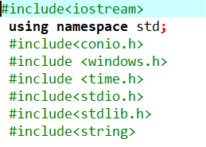
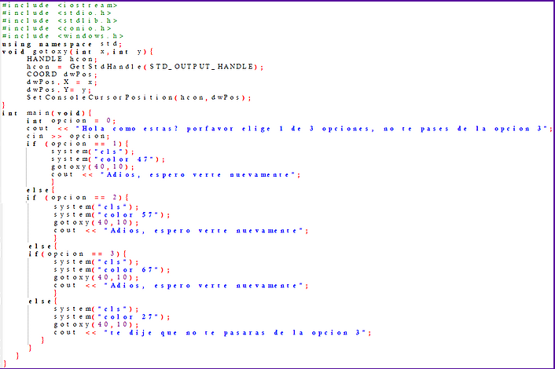

INFORME
SEMANA 3

Lo que habiamos visto en la clase fue lo siguiente, aprendimos la informacion basica sobre un programa llamado dev c++,lo que contenia y su uso cotidiano en la tecnologia creando asi algoritmos basicos
INTRODUCCIÓN
Los pc o computadores hoy en día utilizan un lenguaje BINARIO y gracias a este lenguaje ellos pueden funcionar "1 - 0". El ser humano comprende un lenguaje totalmete diferente al de una maquina, asi que necesitamos algo que traduzca de forma bilateral lo que dice el ser humano y asi el pc o la maquina pueda entender lo que le dice el ser humano y viceversa, asi que necesariamente tendriamos que usar un intermediario entre el usuario(nosotros) y la maquina que tiene que acatar nuestras ordenes, en este caso: dev C++
dev C++
dev C++ es un programa que nos puede traducir idioma exclusivamente de el mismo, el cual maneja un lenguaje propio el cual es c++, asi podriamos comunicarnos con la maquina o el pc atravez de su sintaxis(indicaciones u ordenes).
Este programa contiene una estructura dividida en 3 partes, las cuales son las siguientes: librerias, funciones y constantes, y main
LIBRERIAS
C++ recibe varias ordenes, por ejemplo el manejo de datos, el tiempo, diseño del algoritmo,etc. Todas de esas ordenes van a diferentes grupos y esos grupos son llamados librerias y siempre deben estar desde el principio porque sin ellas no funcionan las ordenes que damos

FUNCIONES Y CONSTANTES
las funciones son elementos que se van a repetir varias veces, las constantes son numeros o elementos que nunca van a cambiar o poder ser modificados, estos los podremos crear pero estos no importa cuanto tiempo pase, nunca van a cambiar estos son:
INT - enteros
CHAR - caracteres
BOOLEAN - son binarios 1 y 0
STRING - caracteres guardados posteriormente
FLOAT - numeros que contienen decimales
MAIN
Aqui es donde se encuentra la estructura de todo el algoritmo y donde podemos dar las ordenes e indicaciones

MI OPINIÓN SOBRE LA CLASE
Durante estas clases he despertado un interes sobre el tema de c++ porque asi podria mejorar a la hora de programar y editar algoritmos en c++, en resumen me parecio interesante.